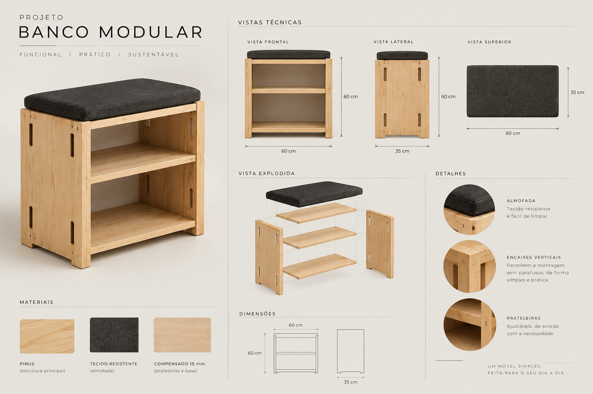
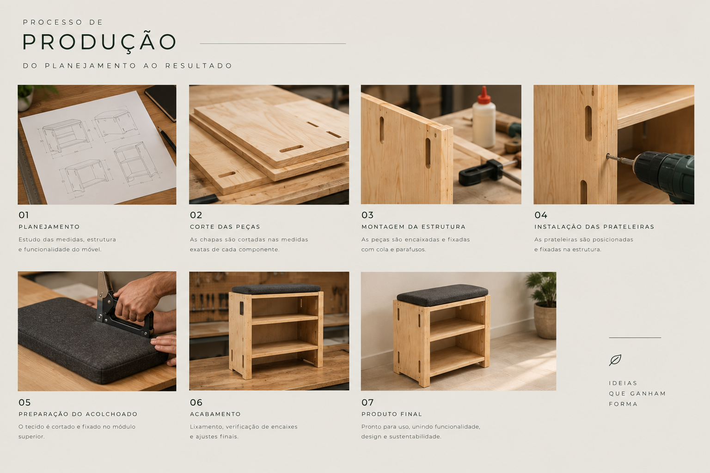
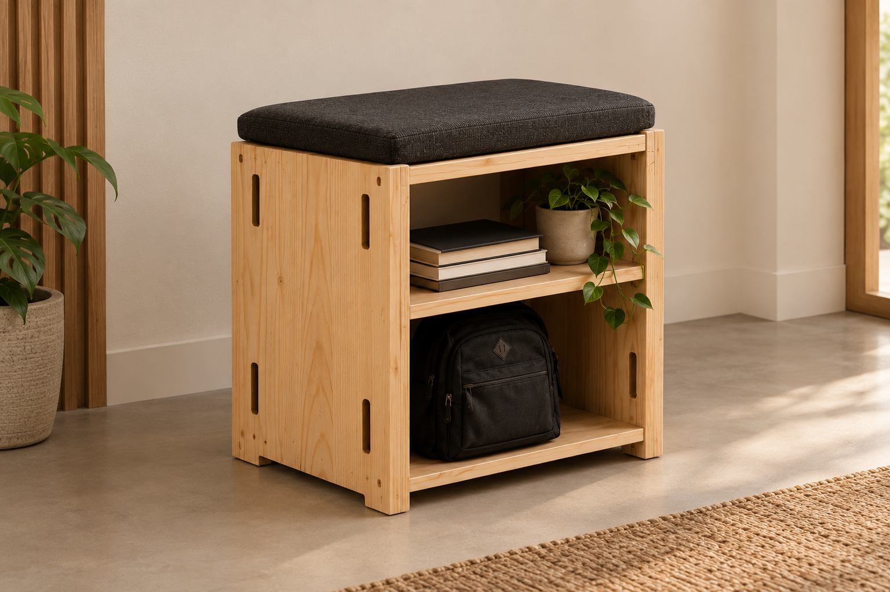

Design que une
beleza e funcionalidade.
Um móvel desenvolvido para combinar praticidade, estética e o charme natural da madeira.
Conheça o projeto ↓
Um móvel pensado
para o dia a dia.
Este projeto tem como objetivo desenvolver um móvel que alie funcionalidade, resistência e estética. A proposta utiliza elementos naturais e um design simples, criando uma peça que pode se adaptar a diferentes ambientes.
O conceito busca valorizar a madeira e suas características naturais, mantendo uma aparência limpa e contemporânea.
Clean +
Rústico
Simplicidade, madeira e funcionalidade em um único projeto.
Funcional
Projetado para facilitar o uso no cotidiano.
Resistente
Materiais escolhidos pensando em durabilidade.
Minimalista
Formas simples que valorizam o ambiente.
Escolhas que fazem
a diferença.
Madeira
Utilizada como principal elemento estrutural e visual do móvel.
Parafusos
Responsáveis pela união e estabilidade das peças.
Acabamento
Aplicado para proteger a madeira e valorizar sua aparência.
Do projeto
à realidade.
Planejamento
Definição das medidas, materiais e características do móvel.
Construção
Corte, montagem e união das peças.
Acabamento
Lixamento, tratamento e finalização da peça.
O processo
em imagens.



Feito por pessoas,
pensado para pessoas.
Projeto desenvolvido por: